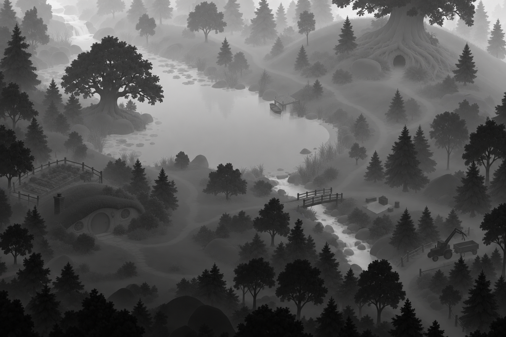
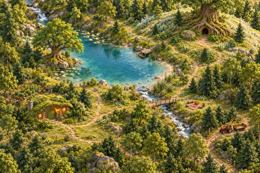
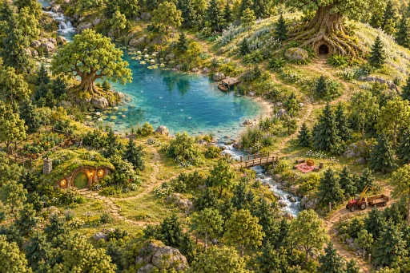

Original atlas
The unchanged 1536 × 1024 source artwork. All surface passes retain this framing.
Estimated continuous depth
Black is nearer; white is farther. This lens-depth estimate replaces the old lake/forest brightness bias with a monotonic ground plane: ground(v) = 0.85 − 0.65 v, where v runs from top to bottom. Bright water follows that continuous gradient. Locally darker occluders receive inferred lifts capped at 0.12 after gentle edge-preserving smoothing.
This is an artistic calibration, not recovered geometry. Shadow can still be mistaken for height, and bright occluders may be missed. Ground focus must use the same groundDepthV2(v) calibration. Existing occlusion can continue to use the unchanged v1 source.
 16-bit scalar PNG · 8-bit WebP · Provenance
16-bit scalar PNG · 8-bit WebP · Provenance

Original artistic depth, unchanged. Fine inferred object boundaries may already be inaccurate.
Estimated view-space normals
Outward normals estimated from the smoothed depth surface: +X points right, +Y up, and +Z toward the viewer. RGB encodes XYZ as 0.5 * N + 0.5. Decode as linear data and renormalize after interpolation.
 RGB8 PNG · Lossless WebP · Provenance and compact grid
RGB8 PNG · Lossless WebP · Provenance and compact grid
The orthographic assumption is P = (x − W/2, H/2 − y, −0.75 H d). Therefore N = normalize(0.75 H ∂d/∂x, −0.75 H ∂d/∂y, 1). The depth scale is an artistic choice, not a measured distance. Ground receding toward the image top yields positive Y normals; no additional ground tilt is applied. These are camera-space normals, not world-up vectors.
At strong discontinuities, derivatives use the lower-jump side. Painted texture and illumination that remain in the source depth still affect the normal estimate.
Estimated brightness and highlight candidates
Inverse-sRGB transfer followed by Rec.709 luminance: Y = 0.2126 R + 0.7152 G + 0.0722 B in linear RGB. White paint, sunlit leaves, reflections and luminous-looking windows can all be bright. This pass alone cannot tell them apart.
 Linear scalar PNG · Lossless WebP · Provenance. Raw linear values appear darker in this preview. Not true emission or HDR.
Linear scalar PNG · Lossless WebP · Provenance. Raw linear values appear darker in this preview. Not true emission or HDR.
Estimated scenery motion coverage
White permits water motion; selected canopy tops receive at most 22% coverage. Black holds structures and uncertain areas still. Polygon boundaries are feathered inward and color checks suppress solid objects within the water regions. The scene overlay blend multiplies this coverage.
 512 × 342; red channel is linear coverage. PNG · Authored regions and provenance. Conservative estimate, not a semantic segmentation model.
512 × 342; red channel is linear coverage. PNG · Authored regions and provenance. Conservative estimate, not a semantic segmentation model.
Scenery motion frames
Five frames, shown in playback order. Frame 1 is the original artwork; frames 2–5 are generated variations, each edited from that same original. The atlas downloads one 442,244-byte sprite sheet containing all five 512 × 342 frames, plus an 11,468-byte mask. The individual images below are review copies, not five extra atlas downloads.
The 12-second loop crossfades adjacent frames at 0, 2.4, 4.8, 7.2 and 9.6 seconds, returning to frame 1 at 12 seconds. The scene overlay uses 35% blend strength multiplied by the motion mask. These are cyclic crossfades, not optical flow. Runtime manifest and workflow.
Frame 1 · 0 seconds · Original artwork. Provenance.
Frame 2 · 2.4 seconds · Generated variation. Prompt and provenance JSON.

Frame 3 · 4.8 seconds · Generated variation. Prompt and provenance JSON.
Frame 4 · 7.2 seconds · Generated variation. Prompt and provenance JSON.

Frame 5 · 9.6 seconds · Generated variation. Prompt and provenance JSON. Loop returns to frame 1 at 12 seconds.
Reproducible derivation
node scripts/build-atlas-surface-passes.cjs generates the assets using fixed numerical settings, ImageMagick and lossless WebP. --check regenerates in temporary storage and compares output bytes. Sidecars record input and output SHA-256 hashes, generator hash, timestamp, command, dimensions and coordinate assumptions.
The CPU surface sampler retains a 256 × 171 RGB8 normal grid (128.25 KiB), plus 42.75 KiB when supplied a depth image. Sampling uses clamped, top-left UVs and renormalized bilinear normals. No pixel readback occurs during sampling.